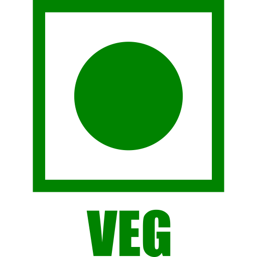
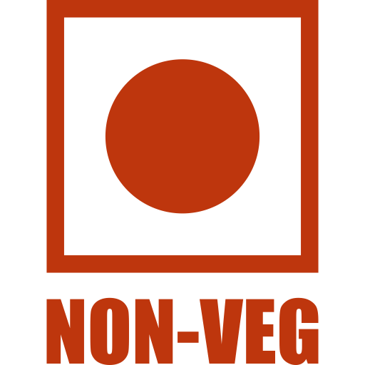

<div class="flex flex-col max-w-240 md:min-w-160 max-h-screen -m-6">
    <!-- Header -->
    <div
        class="flex flex-0 items-center justify-between h-16 pr-3 sm:pr-5 pl-6 sm:pl-8 bg-primary text-on-primary"
    >
        <div class="text-lg font-medium">New Donation</div>
        <button mat-icon-button (click)="discard()" [tabIndex]="-1">
            <mat-icon
                class="text-current"
                [svgIcon]="'heroicons_outline:x'"
            ></mat-icon>
        </button>
    </div>

    <!-- Compose form -->
    <form
        class="flex flex-col flex-auto p-6 sm:p-8 overflow-y-auto"
        [formGroup]="createdDonation"
    >
        <!-- To -->
        <!-- <div class="flex"> -->
        <mat-form-field>
            <mat-label>Select Time</mat-label>
            <mat-select [formControlName]="'donationTime'">
                <ng-container *ngFor="let time of availableTime">
                    <mat-option [value]="time.id">
                        {{ time.time }}
                    </mat-option>
                </ng-container>
            </mat-select>
        </mat-form-field>
        <!-- </div> -->

        <!-- Subject -->
        <mat-form-field class="flex-auto">
            <mat-label>Choose a date</mat-label>
            <input
                matInput
                [matDatepicker]="picker1"
                [formControlName]="'donationDate'"
                [min]="todayDate"
            />
            <mat-datepicker-toggle
                matSuffix
                [for]="picker1"
            ></mat-datepicker-toggle>
            <mat-datepicker #picker1></mat-datepicker>
        </mat-form-field>

        <!-- Veg & Non-Veg Toggle -->
        <div class="flex items-center space-x-4 mt-4">
            <button
                mat-icon-button
                [color]="selectedFoodType === 'veg' ? 'primary' : 'basic'"
                (click)="selectFoodType('veg')"
            >
                
            </button>

            <button
                mat-icon-button
                [color]="selectedFoodType === 'non-veg' ? 'warn' : 'basic'"
                (click)="selectFoodType('non-veg')"
            >
                
            </button>
        </div>
    </form>
    <div class="flex flex-col flex-auto p-6 sm:p-8 overflow-y-auto">
        <div
            style="display: flex; flex-direction: column; gap: 8px; width: 100%"
        >
            <!-- Item Selection Dropdown -->
            <mat-form-field style="width: 100%; min-width: 200px">
                <mat-label>Select Items</mat-label>

                <mat-select
                    #itemSelect
                    [formControl]="selectedItemControl"
                    (selectionChange)="onItemSelect($event.value)"
                >
                    <!-- Search Box -->
                    <mat-option>
                        <input
                            type="text"
                            placeholder="Search items..."
                            [(ngModel)]="searchTerm"
                            (keyup)="filterItems()"
                            style="
                                width: 100%;
                                padding: 5px;
                                border: 1px solid #ccc;
                                border-radius: 4px;
                                outline: none;
                            "
                        />
                    </mat-option>

                    <!-- Filtered Items -->
                    <mat-option
                        *ngFor="let item of filteredItems"
                        [value]="item"
                    >
                        {{ item.name }}
                    </mat-option>
                </mat-select>
            </mat-form-field>

            <!-- Selected Items List (Chips) - Now below the select box -->
            <div style="margin-top: 10px">
                <ul style="list-style: none; padding-left: 20px; margin: 0">
                    <li
                        *ngFor="let chip of selectedChips; let i = index"
                        [style.background]="i % 2 === 0 ? '#f9f9f9' : '#e0e0e0'"
                        style="
                            margin-bottom: 10px;
                            padding: 8px 10px;
                            display: flex;
                            align-items: center;
                            gap: 10px;
                            border-radius: 5px;
                        "
                    >
                        <span style="flex: 1"
                            >{{ i + 1 }}. {{ chip.name }} ({{
                                chip.quantity
                            }})</span
                        >

                        <button
                            (click)="decreaseQuantity(chip)"
                            style="
                                background: red;
                                color: white;
                                border: none;
                                padding: 6px 10px;
                                border-radius: 4px;
                            "
                        >
                            -
                        </button>
                        <button
                            (click)="increaseQuantity(chip)"
                            style="
                                background: green;
                                color: white;
                                border: none;
                                padding: 6px 10px;
                                border-radius: 4px;
                            "
                        >
                            +
                        </button>
                        <button
                            (click)="removeChip(chip)"
                            style="
                                background: gray;
                                color: white;
                                border: none;
                                padding: 6px 10px;
                                border-radius: 4px;
                            "
                        >
                            x
                        </button>
                    </li>
                </ul>
            </div>
        </div>

        <!-- Actions -->
        <div
            class="flex flex-col sm:flex-row sm:items-center justify-between mt-4 sm:mt-6"
        >
            <div class="-ml-2">
                <!-- Attach file -->
            </div>

            <div class="flex items-center mt-4 sm:mt-0">
                <!-- Discard -->
                <button
                    class="ml-auto sm:ml-0"
                    mat-stroked-button
                    (click)="discard()"
                >
                    Discard
                </button>

                <button
                    class="order-first sm:order-last"
                    mat-flat-button
                    [color]="'primary'"
                    (click)="donate()"
                >
                    Donate
                </button>
            </div>
        </div>
    </div>
</div>
